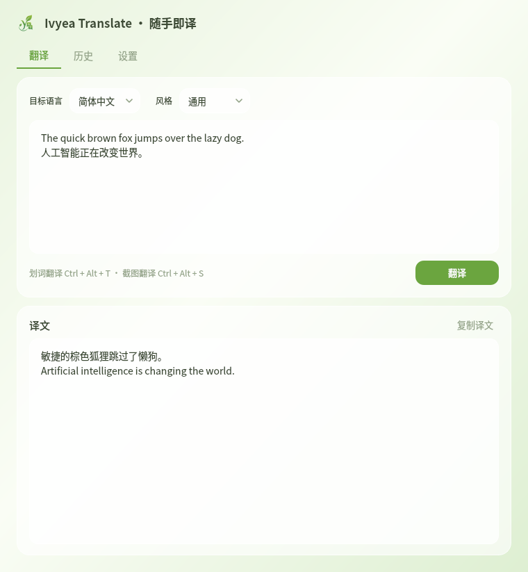
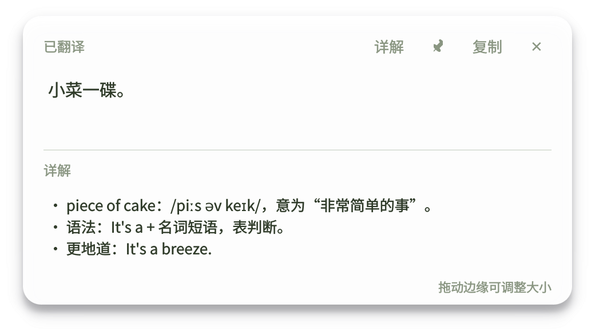

让翻译，自然生长
划词 · 截图 · 复制，随手即译。
接入你自己的大模型，翻译成为桌面上最顺手的那个动作。
Windows 10/11 · macOS (Apple Silicon，Beta，未签名需右键→打开)
移动鼠标让常春藤生长 · 停留种芽 · 点击爆发
↓


三种姿势，随手即译
划词翻译
选中任意文字，按 Ctrl+C+C（连按两下 C），译文就在光标下方弹出。默认智能方向（中↔英自动），弹窗可拖动、可调大小；点「详解」还能看重点词读音、语法与更地道的说法。
截图翻译
按 Ctrl+Alt+S 框选屏幕任意区域，本地 OCR 识别后即刻翻译。译文弹窗永远长在框选区域之外，绝不遮挡原文。
反向写作
用母语写要点，生成地道的外语邮件 / 消息 / 评论 / 社媒贴文，并回译校对确认意思没跑偏。写外文再也不心虚。
免费引擎，开箱即用内置 DeepL / Google / 必应 自动回退，装完不配置也能翻
接自己的大模型任意 OpenAI 兼容接口：DeepSeek、OpenAI、OpenRouter、硅基流动或自建，Key 只存本机
智能方向目标语言设为「自动」：选中中文→英文、其余→中文，无需手动切
14 种语言 · 7 种风格中英日韩法德西俄等互译；美式/英式/正式/口语/学术/简洁
本地 OCR截图识别在本机完成，图片不上传任何服务器
详解模式弹窗一键展开重点词读音、语法与更地道的说法，翻译顺手学外语
弹窗可塑可拖动、可钉住、边缘拖拽调大小，译文历史自动沉淀
一键自动更新新版本弹窗提示，点一下后台下载、静默安装、自动重启，无需去官网
为什么是常春藤
Hedera helix，萌芽、攀爬、成熟、结果——它沿着墙面一寸寸探路，把每一个角落长成自己的领地。
好的翻译工具也该如此：从一次划词开始，悄悄爬满你的工作流。
萌芽选中一段文字
→
攀爬识别与理解
→
成熟译文自然舒展
→
结果沉淀进历史
把它种进你的桌面
macOS Beta
Apple Silicon · 拖进「应用程序」即可 · 未签名，首次请右键→打开；全局快捷键需在「系统设置 → 隐私与安全性 → 辅助功能 / 屏幕录制」中授权
IvyeaTranslate-mac-arm64.dmgWindows 10/11（macOS 为 Beta，仅 Apple Silicon） · 首次使用在「设置」里填入你的模型 API Key 即可 · 全部版本